Tools and Techniques

Techniques -Pulled Felt
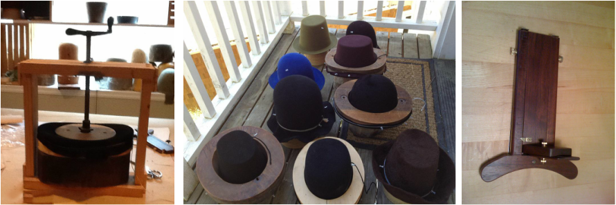Felt hat materials
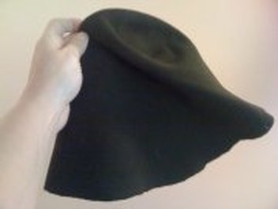 Many of the hats that I create are pulled felt hats. The begin their lives as felt "bodies" or "blanks" which are very generically hood-shaped. These are made from either fur felt or wool felt, with shellac-based sizing used to stiffen and waterproof them. Ethically, I much prefer to use wool rather than fur products (the sheep is involved; the rabbit or beaver is committed.) Artistically, the fur felt is much easier to work and produces a far finer end product. I use both in my creations.
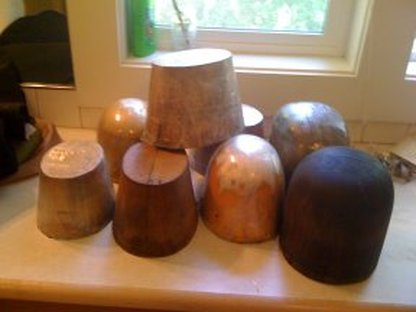 Hat blocks are hat crown shaped molds made from smooth, soft wood such as balsa, poplar, or butternut, and are sometimes difficult and expensive to come by. Some of my blocks are pictured below: Picture I've made several of the blocks I currently use, I have commissioned a few more, and have found a few on eBay, at auctions, and in antique stores. It is important for the block to be the exact shape that you are looking for, since the felt will take on the exact shape of the block. In general, one hat block can produce one shape of hat in one size, and additional blocks are needed if multiple sizes of the same style are desired. I have recently discovered that there are "standard ovals" for hat blocks and brim blocks, and many of the blocks that I have made and commissioned are NOT the standard oval, making them incompatible with the commercial blocks I've procured. That has been a challenge, but an educational one, and one that has resulted in my getting better tools all the time. I continually increase and improve my collection of blocks appropriate for 16th century hats, as budget allows.
Preparing the felt
Before I can stretch the blank over the hat block, I must loosen the wool or fur fibers with steam or hot water. I place the hat blank over the mouth of my steamer until the fibers on the crown stand straight up with a bead of water on each one, or I plunge the blank into a tub of HOT tap water until the bubbles stop. I have a high-tech way of keeping them submerged in the hot water these days; I use a good, heavy rock, pictured at left. At this point the blank is quite stretchy, and ready to be "pulled." If the water is too hot, it can ruin a blank by shrinking the wool too much, and if too cool, the blank won't be stretchy enough. 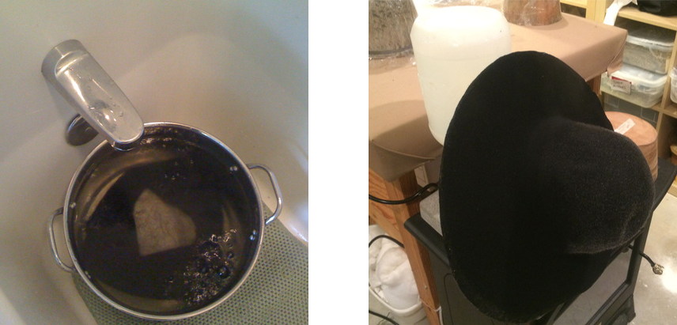
Pulling the felt
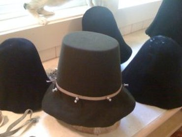 When I remove the blank from the hot water or steamer, I have about twenty seconds to work with it until the fibers get too cool and dry to be stretchy. Using body weight more than arm strength, I force the wet blank quickly and firmly over the wooden hat block, pulling, and pinning until it is perfectly smooth against the wood. If any sections aren't stretchy enough to conform to the block, the felt must come back off the block and go back on the steamer to get re-loosened and then re-stretched on the block until it lies smoothly with no bubbles or wrinkles. Once I'm satisfied with the crown, I place a small, tight elastic band or a thin blocking cord over the felt blank and pin it in several places with rust-free metal push pins to hold the felt tightly around the bottom edge of the hat.
Shaping the Brim
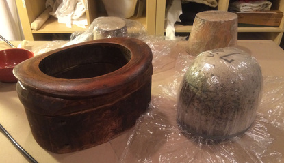 I then move to the ironing board, where I use an industrial steam iron and a press cloth to smooth out the brim portion of the hat. This takes some real elbow grease, even with the gravity-feed industrial uber-iron. When the brim portion is smooth and flat, I pin it to a blocking board and leave it to dry, or I stretch it over a brim flange, and put another blocking cord around it to hold it smoothly. The picture at the left is a hat block, covered with plastic to protect it from the dye in the hat blank, beside a flange that is resting on a flange stand. If the crown block seems to want to pull up out of the crown part of the hat, I use a press to keep it pushed down into the block till it's completely dry. This new tool has made fabulous improvements in my end product. I want three more of them...if I had a good place to store them. 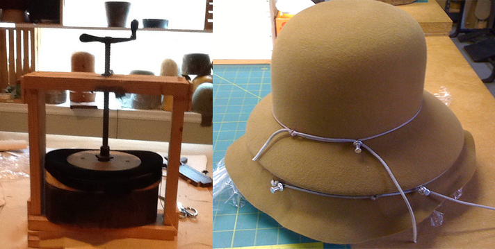
Changing colors
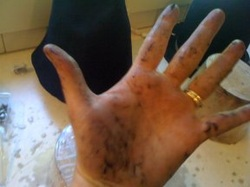 If I am pulling several hats in a row, I have to wash my hands well between colors, as this is a very messy process, and the dyes used in the blanks are often not totally colorfast, especially the red ones and black ones, which just seem to bleed everywhere. I sometimes go about with scalded, grey hands.
Stiffening (Sizing)
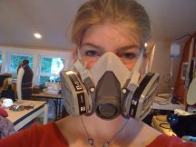 After drying completely, the hat is now ready to be stiffened, or "sized". I use a more eco-friendly sizing these days, which, though not as stiff as the brand I learned with, is not going to give me cancer (hooray!) Even with the new product, I wear a respirator with organic vapor cartridges at all times while working with the stuff. I should wear gloves, too. Must really get gloves. Picture If it is both warm and dry outside, I go outdoors to size, otherwise, I work in my garage, which is insulated and heated, and then leave them overnight to dry. The sizing can be brushed or sprayed onto the hats. I prefer brushing, as spraying seems to get bits of sizing everywhere (both messy and wasteful) and brushing seems more controlled. For wool felts, I can paint the sizing on the outside of the hat. If it is a fur felt, I take the hat off the block and paint the sizing on the inside of the hat and the underside of the brim, to preserve the finish of the fur. 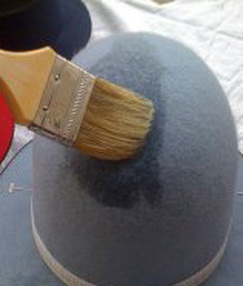 I have ended up purchasing the sizing in powder form in a large quantity directly from the manufacturer, and I mix it myself as needed. This not only lets me reduce costs, but has also allowed me to store smaller amounts of flammable liquid (denatured alcohol) in my home. The other advantage is that when I run out, I can run to my local paint store and pick up another gallon of alcohol, come home, and mix up what I need in a gallon sized glass jar, rather than making frantic last-minute express($$) orders to my millinery supplier. The hats must be absolutely dry before sizing or white "strike" marks may appear on the felt when the sizing dries. I don't know why this happens, but I am pretty sure how to prevent it, so that knowledge is enough for now. After the hats have been completely saturated with sizing, I wipe them with a cotton cloth to smooth and "un-stick" the nap of the wool or fur. I then leave them to dry - again overnight. In the morning, I check for any soft spots that the sizing missed, re-size and re-dry as necessary.
Removing the hat from the block
Once finally sized and dry, the sometimes arduous process of removing the hat from the block commences. The hat can easily self destruct at this stage, so this must be done carefully and slowly. Some blocks are easier to extract than others, based entirely on their shape. I've modified my processes several times to make this stage go more smoothly, and still have some modifications to make.
Trimming the Brim
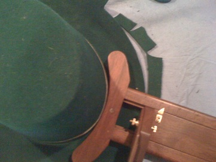 Once the sizing has completely dried, it is time to trim the brim to the final shape. If the hat is on a flange, I mark the edge with chalk and take it off the block to cut the brim on the chalk line. If the hat brim was on a blocking board, I remove the pins and trim the brim to the desired size with a rounding jack. This thing is one of the most amazing new additions to my toolset, and the crummy cardboard templates I used to use went right into the trash. I got it from DeCou studios:
Finishing the Edge
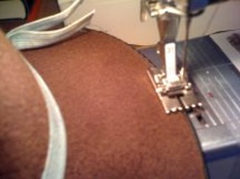 Next, I machine stitch millinery wire to the very edge of the brim, making sure to overlap the wire at least two inches at the center back. If the brim is large, I first need to "spring" the wire, which means that I have to straighten out the natural curve that came from the wire being coiled in a roll. If I don't spring the wire, the brim of the hat will have a mind of its own as far as shape and attitude goes. I spring the wire by stroking it in the opposite direction from the natural curve. I just need to relax it until the circle is larger than the brim I'm stitching it to. I then prepare a special, curve-able ribbon called milliner's grosgrain (sometimes also called Petersham, though that is a debate for a different day) to be sewn around the edge, covering the wire. This must be pre-shrunk with hot water and then ironed flat, but not completely dry. A new trick I've picked up is to stretch the ribbon around the whole brim to find the exact size, and then machine stitch the center back seam of the ribbon together before stitching the ribbon onto the brim. The result is much neater at the center back seam, and actually holds the ribbon in place better during stitching, allowing for a neater finish all around. Once the ribbon is folded, stretched and machine stitched smoothly around the edge, it really starts to look like a hat.
Trimming and Finishing
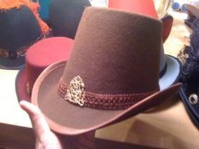 I sew together the ends of a leather sweatband to be just the right size for the hat. (This has been QUITE the learning curve!) And then stitch it into the hat by hand. All that's left then is the trimming stage, which can the most time consuming part of the process, other than drying time. It's also the most fun part: curling and wiring ostrich wing feathers, making ribbon cockades, selecting and attaching, filigree findings, large glass buttons or silk scarves. I'm not a fan of glue to attach trim to hats, so all my trims are hand-stitched in place. After all trims are in place, I install the lining. A final steaming, and a brisk brushing with a stiff brush like a nail brush to raise the nap, and the pulled felt hat is finished!